Changes in PRIMAP-hist v2.6.1_final compared to v2.6_final for Dominican Republic
2025-03-19
Johannes Gütschow
Change analysis for Dominican Republic for PRIMAP-hist v2.6.1_final compared to v2.6_final
Overview over emissions by sector and gas
The following figures show the aggregate national total emissions excluding LULUCF AR6GWP100 for the country reported priority scenario. The dotted linesshow the v2.6_final data.
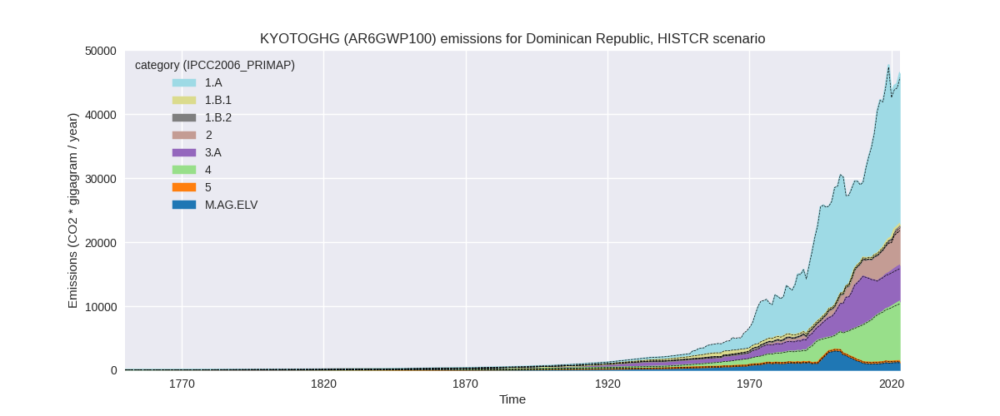
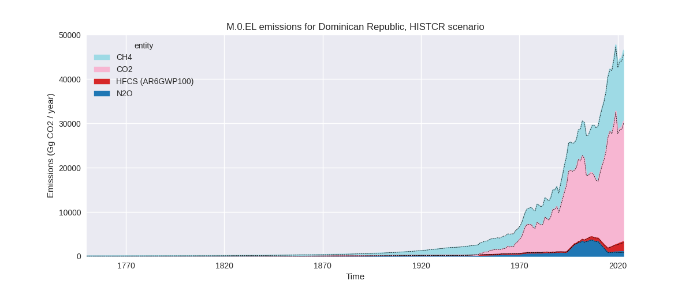
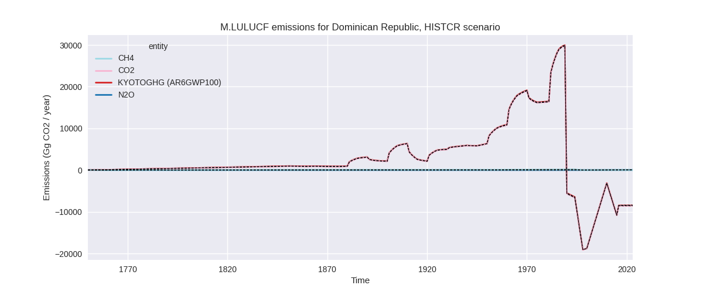
The following figures show the aggregate national total emissions excluding LULUCF AR6GWP100 for the third party priority scenario. The dotted linesshow the v2.6_final data.
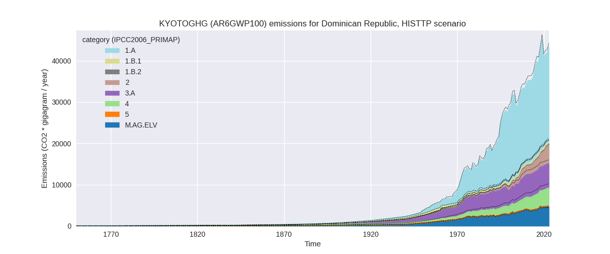
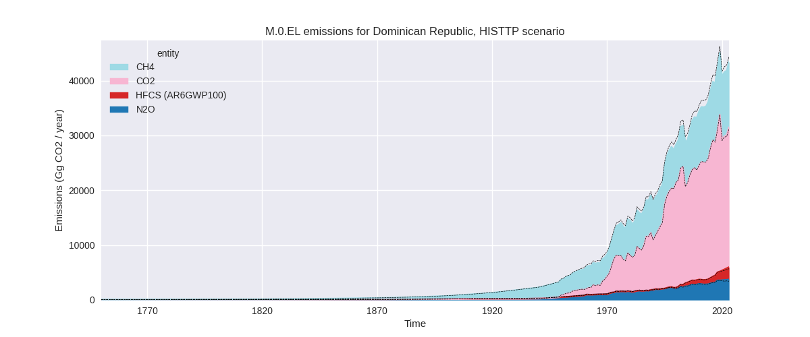

Overview over changes
In the country reported priority scenario we have the following changes for aggregate Kyoto GHG and national total emissions excluding LULUCF (M.0.EL):
- Emissions in 2023 have changed by 1.6%% (750.64 Gg CO2 / year)
- Emissions in 1990-2023 have changed by 0.2%% (77.41 Gg CO2 / year)
In the third party priority scenario we have the following changes for aggregate Kyoto GHG and national total emissions excluding LULUCF (M.0.EL):
- Emissions in 2023 have changed by -2.1%% (-950.85 Gg CO2 / year)
- Emissions in 1990-2023 have changed by -3.1%% (-1030.61 Gg CO2 / year)
Most important changes per scenario and time frame
In the country reported priority scenario the following sector-gas combinations have the highest absolute impact on national total KyotoGHG (AR6GWP100) emissions in 2023 (top 5):
- 1: 4, CH4 with 319.48 Gg CO2 / year (3.6%)
- 2: 1.B.2, CO2 with 217.94 Gg CO2 / year (3056054571.5%)
- 3: 3.A, N2O with 129.07 Gg CO2 / year (41.6%)
- 4: 1.B.1, CH4 with -103.95 Gg CO2 / year (-29.4%)
- 5: 1.B.2, CH4 with 62.71 Gg CO2 / year (528.7%)
In the country reported priority scenario the following sector-gas combinations have the highest absolute impact on national total KyotoGHG (AR6GWP100) emissions in 1990-2023 (top 5):
- 1: 1.B.2, CO2 with 44.20 Gg CO2 / year (3881874.9%)
- 2: 4, CH4 with 30.78 Gg CO2 / year (0.6%)
- 3: 5, N2O with -20.42 Gg CO2 / year (-9.5%)
- 4: 3.A, N2O with 15.36 Gg CO2 / year (2.8%)
- 5: 1.B.1, CH4 with -5.28 Gg CO2 / year (-1.9%)
In the third party priority scenario the following sector-gas combinations have the highest absolute impact on national total KyotoGHG (AR6GWP100) emissions in 2023 (top 5):
- 1: 4, CH4 with -1251.02 Gg CO2 / year (-23.0%)
- 2: 1.B.2, CO2 with 217.94 Gg CO2 / year (3056054571.5%)
- 3: M.AG.ELV, N2O with 184.08 Gg CO2 / year (6.7%)
- 4: 2, CO2 with -174.57 Gg CO2 / year (-6.8%)
- 5: 1.B.1, CH4 with -103.95 Gg CO2 / year (-29.4%)
In the third party priority scenario the following sector-gas combinations have the highest absolute impact on national total KyotoGHG (AR6GWP100) emissions in 1990-2023 (top 5):
- 1: 4, CH4 with -989.12 Gg CO2 / year (-28.0%)
- 2: 2, CO2 with -93.99 Gg CO2 / year (-6.4%)
- 3: 1.B.2, CO2 with 44.20 Gg CO2 / year (3881874.9%)
- 4: 5, N2O with -20.42 Gg CO2 / year (-9.5%)
- 5: M.AG.ELV, N2O with 15.68 Gg CO2 / year (0.7%)
Notes on data changes
Here we list notes explaining important emissions changes for the country.
- No new country reported data has been included. Changes in the CR time-series are small and come from updated third party data (EDGAR, FAO) which is used to extrapolate the country reported data. The relative change of CO2 and CH4 in 1.B.2 is very high as EDGAR data was almost zero in the last version and is much higher now (CR, TP). The impact on total emissions is still small.
- For the TP time-series the decrease in waste CH4 (from EDGAR) is the
dominating factor especially for cumulative emissions.
- Emissions from M.AG.ELV are higher in 2023 because FAO emissions have been corrected upwards for the latest years.
Changes by sector and gas
For each scenario and time frame the changes are displayed for all individual sectors and all individual gases. In the sector plot we use aggregate Kyoto GHGs in AR6GWP100. In the gas plot we usenational total emissions without LULUCF.
country reported scenario
2023
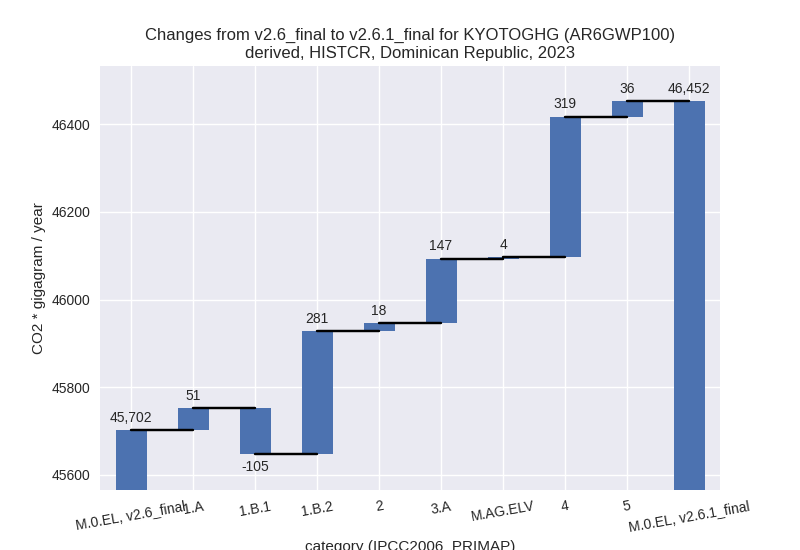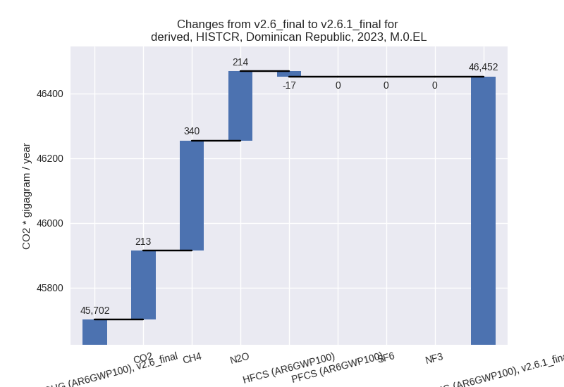
1990-2023
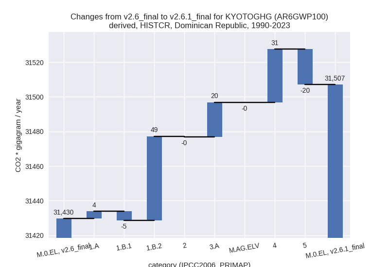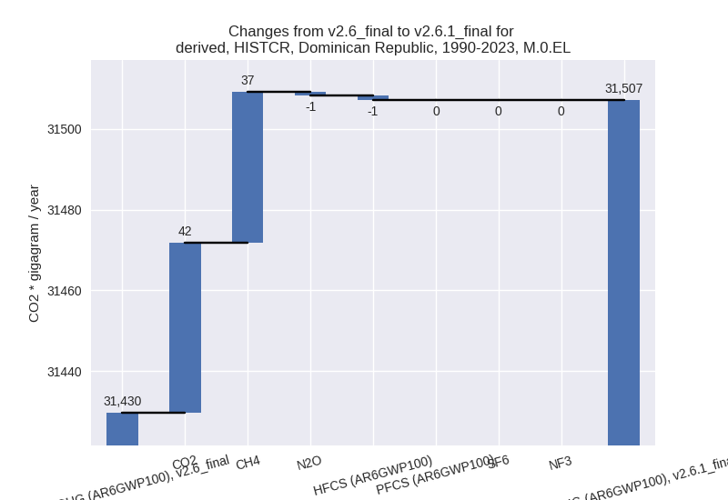
third party scenario
2023
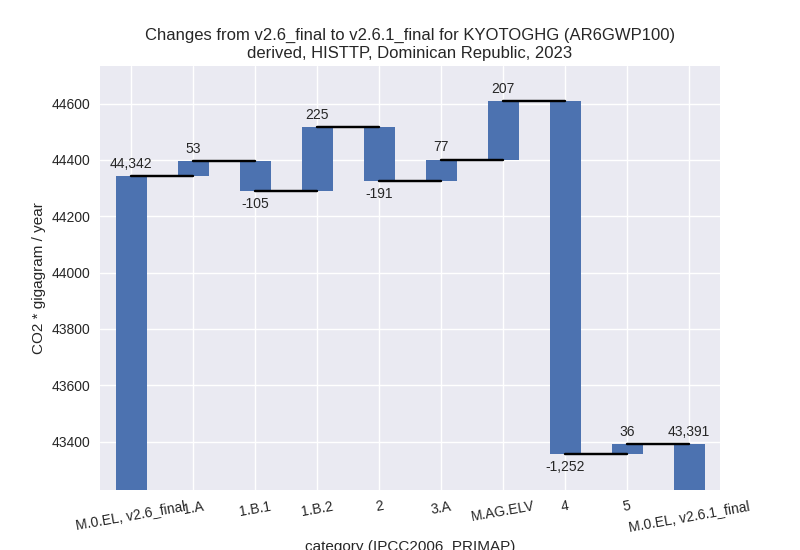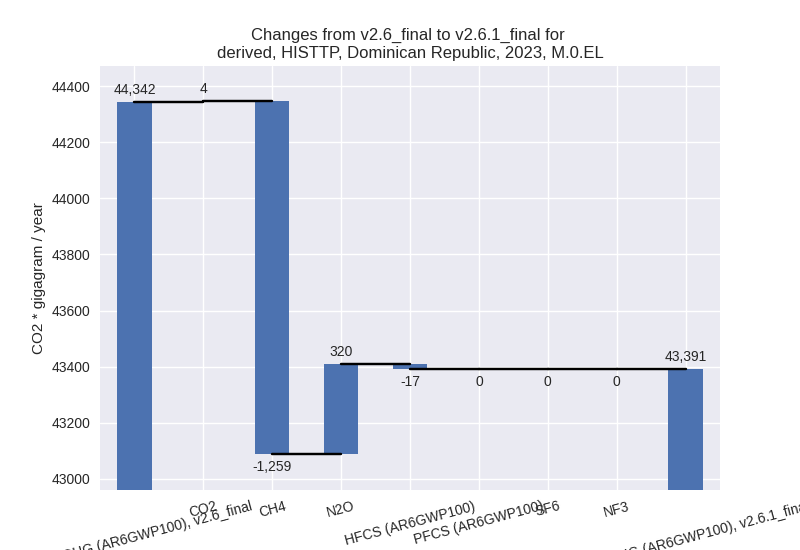
1990-2023
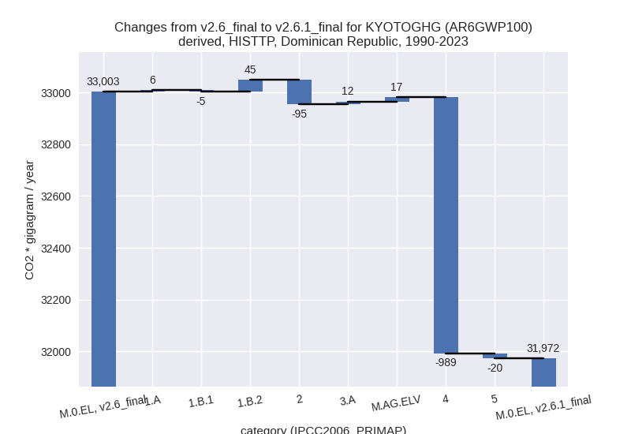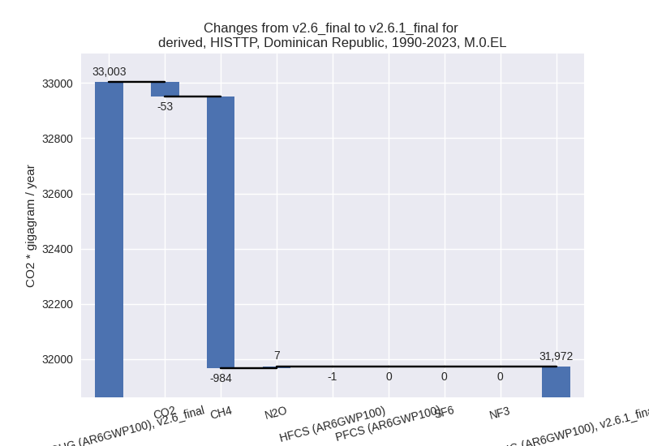
Detailed changes for the scenarios:
country reported scenario (HISTCR):
Most important changes per time frame
For 2023 the following sector-gas combinations have the highest absolute impact on national total KyotoGHG (AR6GWP100) emissions in 2023 (top 5):
- 1: 4, CH4 with 319.48 Gg CO2 / year (3.6%)
- 2: 1.B.2, CO2 with 217.94 Gg CO2 / year (3056054571.5%)
- 3: 3.A, N2O with 129.07 Gg CO2 / year (41.6%)
- 4: 1.B.1, CH4 with -103.95 Gg CO2 / year (-29.4%)
- 5: 1.B.2, CH4 with 62.71 Gg CO2 / year (528.7%)
For 1990-2023 the following sector-gas combinations have the highest absolute impact on national total KyotoGHG (AR6GWP100) emissions in 1990-2023 (top 5):
- 1: 1.B.2, CO2 with 44.20 Gg CO2 / year (3881874.9%)
- 2: 4, CH4 with 30.78 Gg CO2 / year (0.6%)
- 3: 5, N2O with -20.42 Gg CO2 / year (-9.5%)
- 4: 3.A, N2O with 15.36 Gg CO2 / year (2.8%)
- 5: 1.B.1, CH4 with -5.28 Gg CO2 / year (-1.9%)
Changes in the main sectors for aggregate KyotoGHG (AR6GWP100) are
- 1: Total sectoral emissions in 2022 are 22804.48 Gg CO2 / year which is 51.0% of M.0.EL emissions. 2023 Emissions have changed by 0.9% (226.28 Gg CO2 / year). 1990-2023 Emissions have changed by 0.3% (47.48 Gg CO2 / year).
- 2: Total sectoral emissions in 2022 are 5799.65 Gg CO2 / year which is 13.0% of M.0.EL emissions. 2023 Emissions have changed by 0.3% (17.56 Gg CO2 / year). 1990-2023 Emissions have changed by -0.0% (-0.30 Gg CO2 / year).
- M.AG: Total sectoral emissions in 2022 are 6805.19
Gg CO2 / year which is 15.2% of M.0.EL emissions. 2023 Emissions have
changed by 2.3% (151.63 Gg CO2 /
year). 1990-2023 Emissions have changed by 0.3% (19.88 Gg CO2 / year). For 2023 the
changes per gas
are:
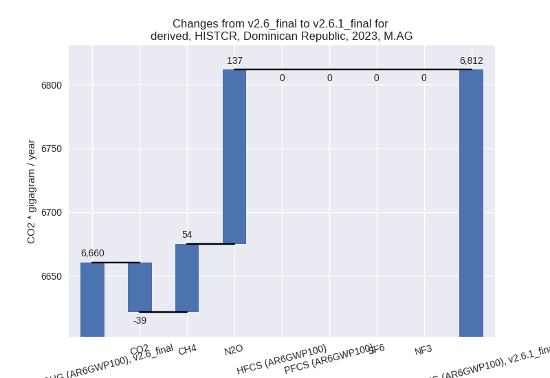
The changes come from the following subsectors:- 3.A: Total sectoral emissions in 2022 are 5620.51
Gg CO2 / year which is 82.6% of category M.AG emissions. 2023 Emissions
have changed by 2.7% (147.21 Gg CO2
/ year). 1990-2023 Emissions have changed by 0.4% (19.96 Gg CO2 / year). For 2023 the
changes per gas
are:
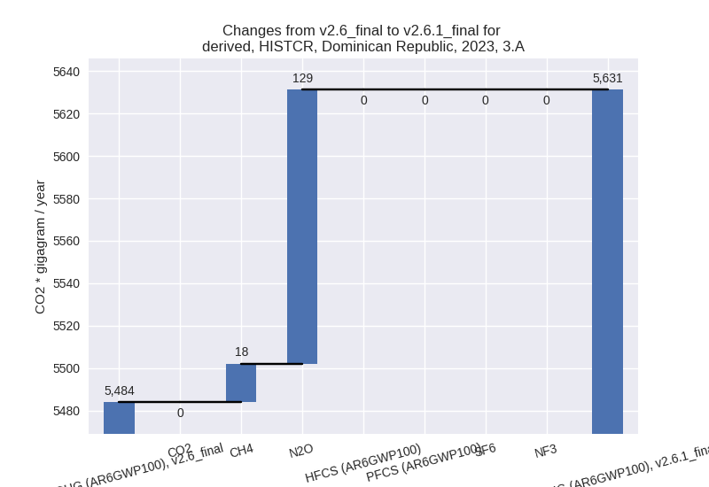
There is no subsector information available in PRIMAP-hist. - M.AG.ELV: Total sectoral emissions in 2022 are 1184.68 Gg CO2 / year which is 17.4% of category M.AG emissions. 2023 Emissions have changed by 0.4% (4.42 Gg CO2 / year). 1990-2023 Emissions have changed by -0.0% (-0.08 Gg CO2 / year).
- 3.A: Total sectoral emissions in 2022 are 5620.51
Gg CO2 / year which is 82.6% of category M.AG emissions. 2023 Emissions
have changed by 2.7% (147.21 Gg CO2
/ year). 1990-2023 Emissions have changed by 0.4% (19.96 Gg CO2 / year). For 2023 the
changes per gas
are:
- 4: Total sectoral emissions in 2022 are 9063.75 Gg
CO2 / year which is 20.3% of M.0.EL emissions. 2023 Emissions have
changed by 3.6% (319.47 Gg CO2 /
year). 1990-2023 Emissions have changed by 0.6% (30.78 Gg CO2 / year). For 2023 the
changes per gas
are:
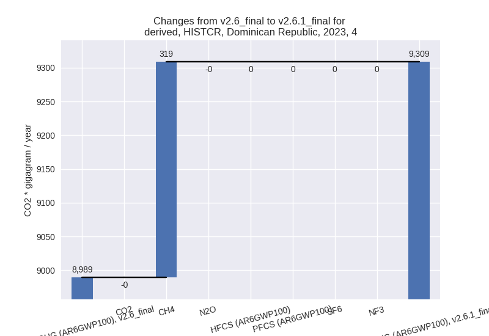 - 5: Total sectoral emissions in 2022 are 234.66 Gg
CO2 / year which is 0.5% of M.0.EL emissions. 2023 Emissions have
changed by 16.9% (35.69 Gg CO2 /
year). 1990-2023 Emissions have changed by -9.5% (-20.42 Gg CO2 / year). For 2023 the
changes per gas
are:
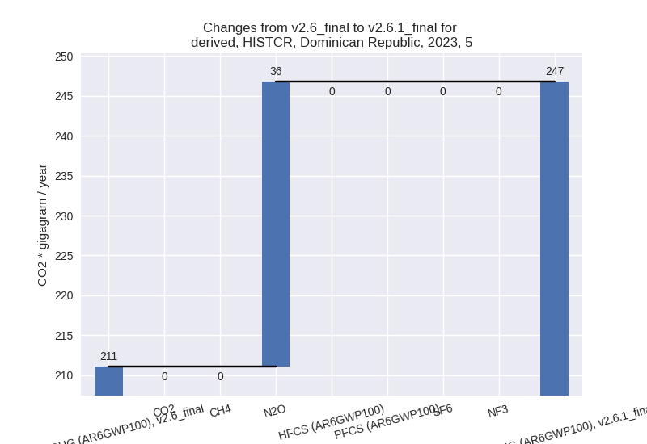
For 1990-2023 the changes per gas are:
third party scenario (HISTTP):
Most important changes per time frame
For 2023 the following sector-gas combinations have the highest absolute impact on national total KyotoGHG (AR6GWP100) emissions in 2023 (top 5):
- 1: 4, CH4 with -1251.02 Gg CO2 / year (-23.0%)
- 2: 1.B.2, CO2 with 217.94 Gg CO2 / year (3056054571.5%)
- 3: M.AG.ELV, N2O with 184.08 Gg CO2 / year (6.7%)
- 4: 2, CO2 with -174.57 Gg CO2 / year (-6.8%)
- 5: 1.B.1, CH4 with -103.95 Gg CO2 / year (-29.4%)
For 1990-2023 the following sector-gas combinations have the highest absolute impact on national total KyotoGHG (AR6GWP100) emissions in 1990-2023 (top 5):
- 1: 4, CH4 with -989.12 Gg CO2 / year (-28.0%)
- 2: 2, CO2 with -93.99 Gg CO2 / year (-6.4%)
- 3: 1.B.2, CO2 with 44.20 Gg CO2 / year (3881874.9%)
- 4: 5, N2O with -20.42 Gg CO2 / year (-9.5%)
- 5: M.AG.ELV, N2O with 15.68 Gg CO2 / year (0.7%)
Changes in the main sectors for aggregate KyotoGHG (AR6GWP100) are
- 1: Total sectoral emissions in 2022 are 22357.41 Gg CO2 / year which is 53.5% of M.0.EL emissions. 2023 Emissions have changed by 0.7% (172.85 Gg CO2 / year). 1990-2023 Emissions have changed by 0.2% (45.82 Gg CO2 / year).
- 2: Total sectoral emissions in 2022 are 4485.14 Gg
CO2 / year which is 10.7% of M.0.EL emissions. 2023 Emissions have
changed by -4.0% (-191.19 Gg CO2 /
year). 1990-2023 Emissions have changed by -4.3% (-95.17 Gg CO2 / year). For 2023 the
changes per gas
are:
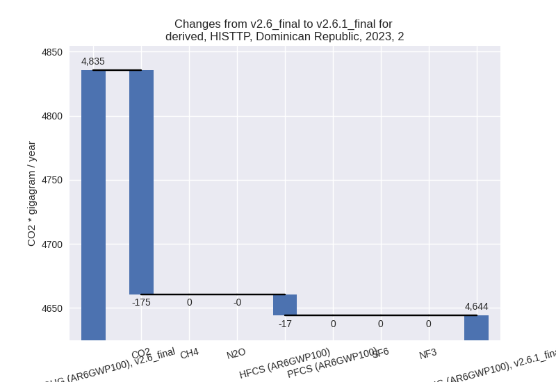
For 1990-2023 the changes per gas are:
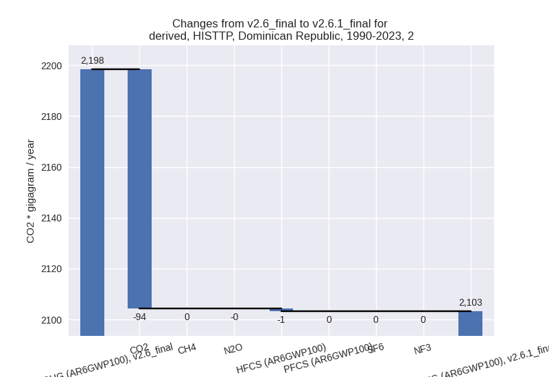 - M.AG: Total sectoral emissions in 2022 are 10494.69
Gg CO2 / year which is 25.1% of M.0.EL emissions. 2023 Emissions have
changed by 2.8% (283.99 Gg CO2 /
year). 1990-2023 Emissions have changed by 0.3% (28.44 Gg CO2 / year). For 2023 the
changes per gas
are:
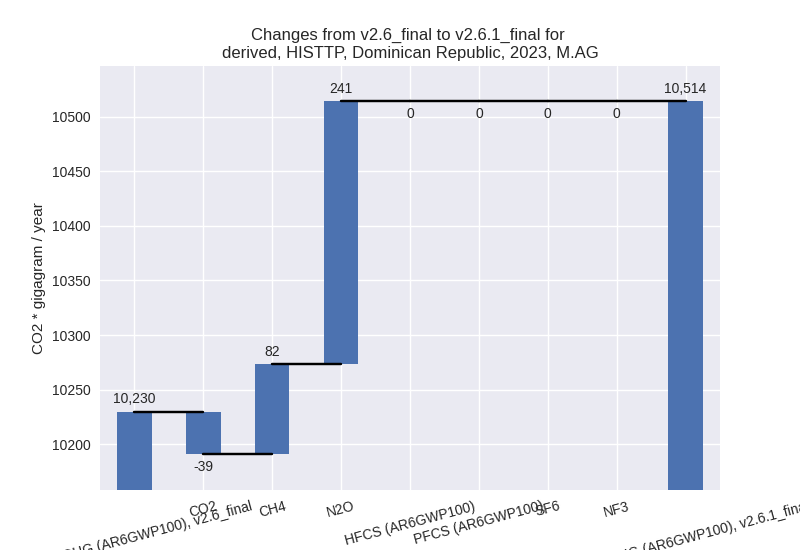
The changes come from the following subsectors:- 3.A: Total sectoral emissions in 2022 are 5876.07 Gg CO2 / year which is 56.0% of category M.AG emissions. 2023 Emissions have changed by 1.3% (76.71 Gg CO2 / year). 1990-2023 Emissions have changed by 0.2% (11.80 Gg CO2 / year).
- M.AG.ELV: Total sectoral emissions in 2022 are
4618.62 Gg CO2 / year which is 44.0% of category M.AG emissions. 2023
Emissions have changed by 4.7%
(207.29 Gg CO2 / year). 1990-2023 Emissions have changed by 0.5% (16.64 Gg CO2 / year). For 2023 the
changes per gas
are:
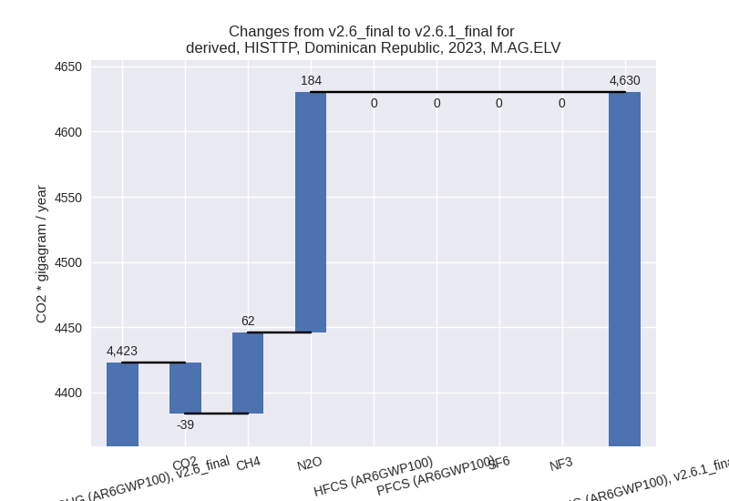
There is no subsector information available in PRIMAP-hist.
- 4: Total sectoral emissions in 2022 are 4217.76 Gg
CO2 / year which is 10.1% of M.0.EL emissions. 2023 Emissions have
changed by -22.4% (-1252.20 Gg CO2 /
year). 1990-2023 Emissions have changed by -27.3% (-989.27 Gg CO2 / year). For 2023
the changes per gas
are:
For 1990-2023 the changes per gas are:
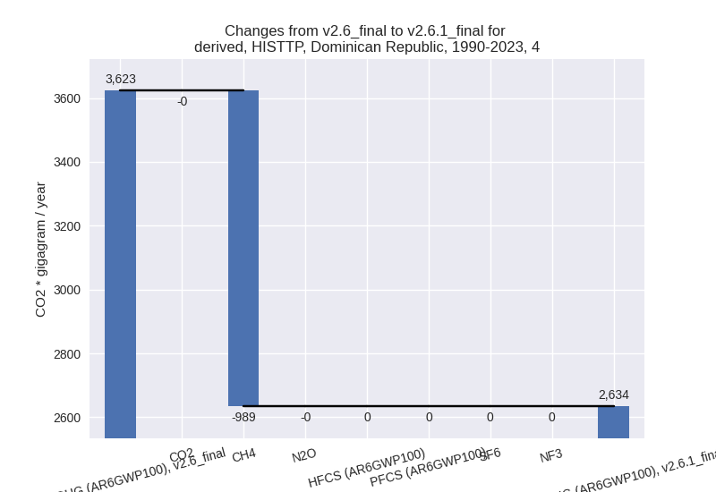 - 5: Total sectoral emissions in 2022 are 234.66 Gg
CO2 / year which is 0.6% of M.0.EL emissions. 2023 Emissions have
changed by 16.9% (35.69 Gg CO2 /
year). 1990-2023 Emissions have changed by -9.5% (-20.42 Gg CO2 / year). For 2023 the
changes per gas
are:
For 1990-2023 the changes per gas are:
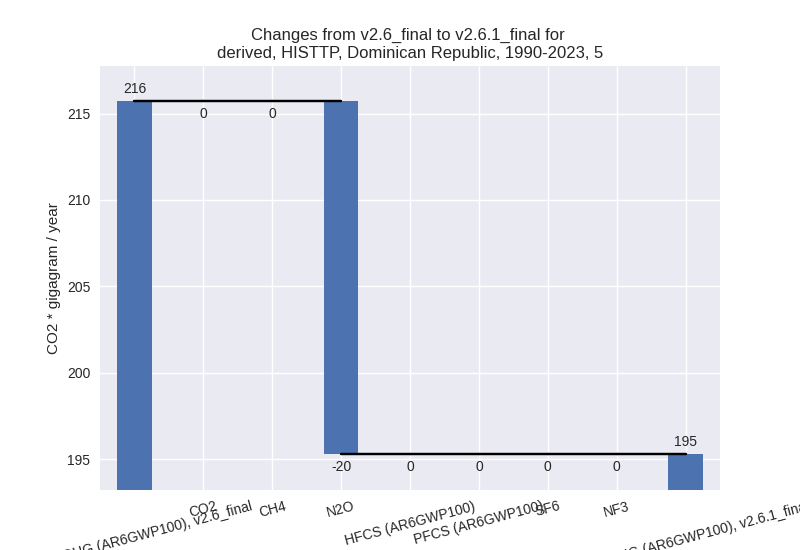